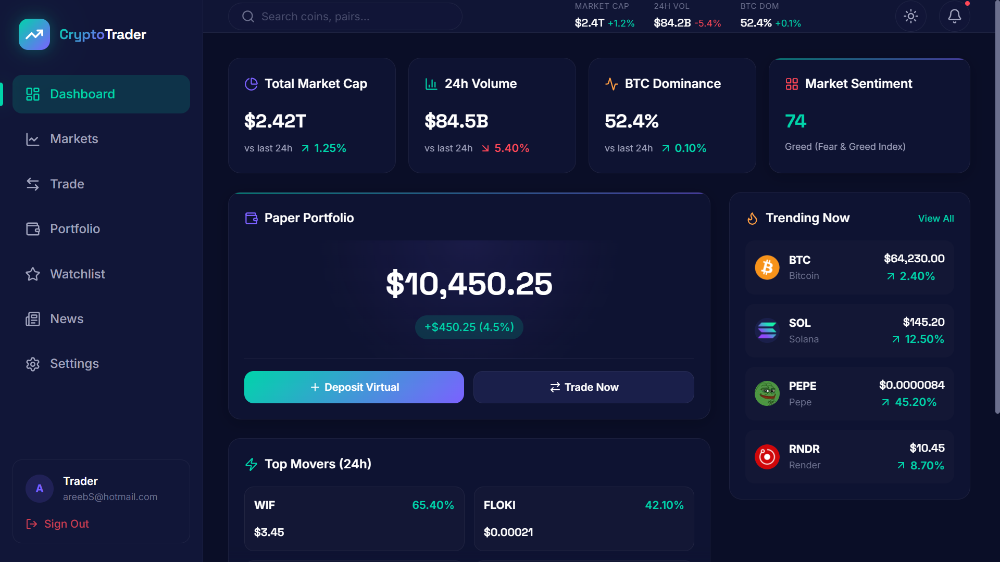
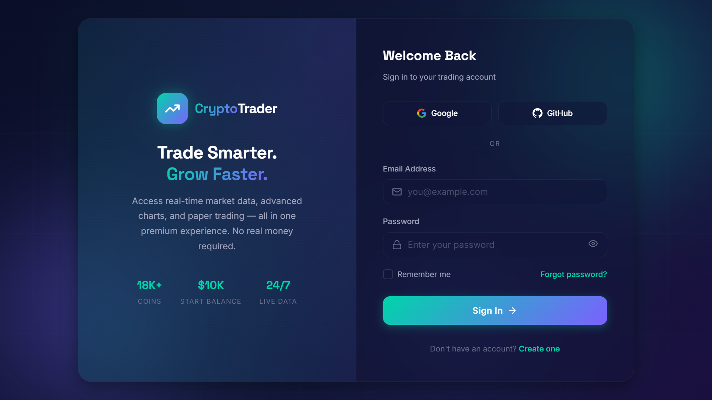

01 // THE STARTING POINT
Market volatility demands zero UI latency.
Every millisecond counts.
Traditional financial dashboards suffer from bloated state management, unthrottled re-renders, and sluggish SVG charting libraries that freeze the DOM during high-frequency volatility spikes.
CryptoTrader was engineered to solve this friction: harness hardware-accelerated Canvas rendering via TradingView's Lightweight Charts, isolate local portfolio mutations via Zustand with local persistence, and handle asynchronous data caching with TanStack Query.

FIG 2.0 — LIVE TERMINAL: Interactive TradingView candlestick telemetry, volume metrics, and order execution modal.

FIG 2.1 — AUTHENTICATION & ACCESS: Glassmorphic session handling with simulated 30-minute expiry states.
02 // ARCHITECTURE IN PRACTICE
Uncompromising state separation and reactive updates.
STEP 01
Hardware-Accelerated Canvas Rendering
Instead of rendering DOM nodes or heavy SVG elements for thousands of price ticks, the terminal employs TradingView's canvas-based Lightweight Charts. This achieves smooth 60 FPS panning, zooming, and crosshair inspections across 1D, 7D, 30D, and 1Y timeframe intervals.
STEP 02
Paper Trading Simulation Engine
New accounts are provisioned with a virtual $10,000 USD sandbox. Buy and sell orders execute immediately against real-time CoinGecko API prices, computing slippage, updating weighted average cost basis, and tracking unrealized P&L via Zustand with local browser persistence.
STEP 03
Zero-Jank TanStack Query Caching
Network calls to market endpoints are deduplicated and aggressively cached in memory. Window focus refetching and background polling keep price tickers continuously synced without triggering full component tree re-renders.
03 // PERFORMANCE BENCHMARKS
Production metrics in high-volatility scenarios.
< 16ms
Chart Render Latency
$10,000
Initial Virtual Sandbox
100%
Client-Side Persistence
0 Jank
Scroll & Pan Performance
The application is deployed live on Vercel with automated continuous deployment from GitHub. It offers full responsiveness across ultra-wide desktop monitors, tablets, and mobile smartphones.